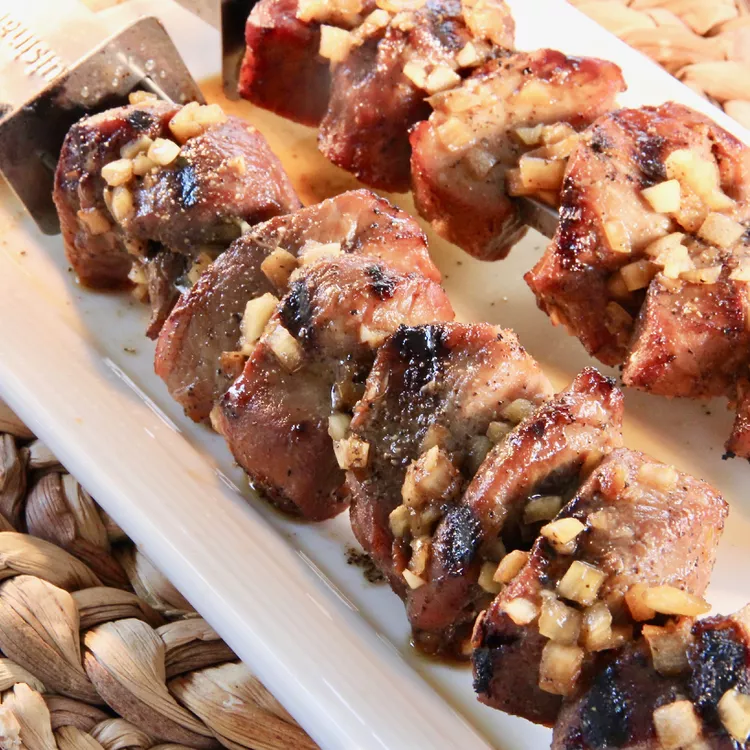

Barbecued Pork Kebabs

Ingredients
- 1 cup white sugar
- 1 cup soy sauce
- 1 onion, diced
- 5 cloves garlic, chopped
- 1 teaspoon ground black pepper
- 1 (4 pound) boneless pork loin, cut into 1 1/2-inch cubes
- 10 bamboo skewers, soaked in water for 30 minutes
Directions
- Whisk the sugar, soy sauce, onion, garlic and black pepper together in a large bowl. Add the pork and toss to coat. Cover and refrigerate at least 2 hours. Overnight is best if possible.
- Preheat an outdoor grill for high heat, and lightly oil the grate.
- Thread the pork onto the soaked skewers. Cook on the preheated grill until the pork is no longer pink in the center, 3 to 5 minutes per side.